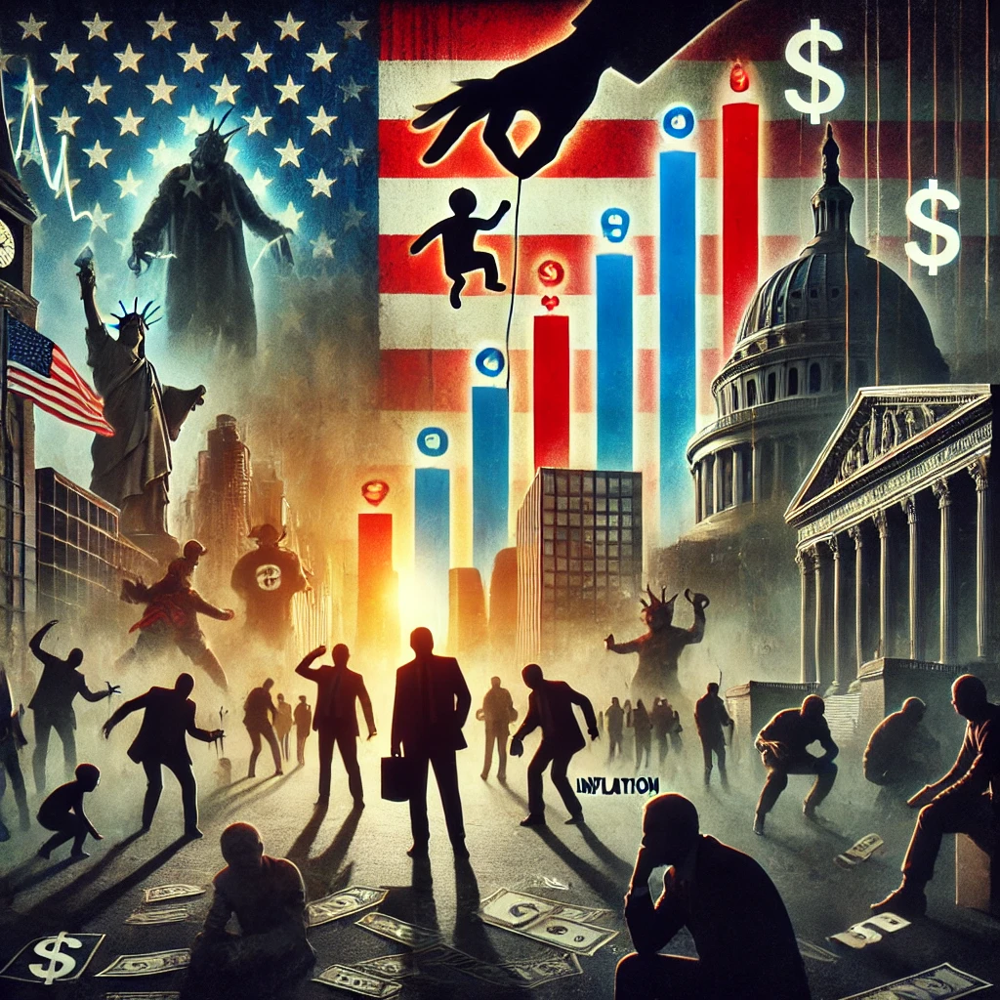

O Caos Económico nos EUA: O Impacto das Políticas de Trump e Musk
Publicado em 2025-03-16 21:31:14

Desde a sua reeleição em janeiro de 2025, Donald Trump tem implementado uma série de medidas económicas controversas, com o apoio de Elon Musk, que agora desempenha um papel central no governo como responsável pelo Departamento de Eficiência Governamental. Estas políticas, que incluem tarifas massivas sobre importações, cortes drásticos na administração pública e desregulamentação financeira, têm gerado um cenário de caos económico.
A economia americana, antes relativamente estável, enfrenta agora inflação crescente, fuga de investimentos e um aumento da desigualdade social, enquanto os cidadãos comuns suportam o peso das decisões políticas erráticas.
Neste artigo, exploramos o impacto destas políticas na economia, nos mercados financeiros e na vida dos americanos, além de analisar as potenciais consequências a longo prazo.
1. O Aumento das Tarifas e o Efeito Cascata na Economia
Uma das primeiras medidas de Trump ao regressar à Casa Branca foi impor tarifas elevadas sobre importações da China, União Europeia, México e Canadá, alegando que isso protegeria os empregos americanos.
1.1 O Impacto Direto nos Preços
Empresas que dependem de matérias-primas importadas foram obrigadas a aumentar os preços, afetando desde eletrónica até produtos básicos como alimentos e combustíveis.
A inflação disparou devido ao aumento dos custos de produção, levando a uma queda no poder de compra dos consumidores.
1.2 Respostas da China e da UE: Retaliação Comercial
Em resposta às tarifas impostas pelos EUA, a China e a União Europeia adotaram medidas retaliatórias, impondo tarifas sobre produtos americanos como carros, soja e maquinaria pesada.
Agricultores americanos e indústrias exportadoras foram duramente atingidos, vendo os seus mercados externos reduzidos drasticamente.
1.3 A Falência de Pequenos Negócios
Pequenas e médias empresas foram as mais prejudicadas, pois não conseguem absorver os aumentos de custos nem transferi-los para os consumidores da mesma forma que as grandes corporações.
Isso resultou num aumento das falências empresariais e numa onda de despedimentos em setores como o retalho e a manufatura.
2. Inflação e Desvalorização do Dólar
Os efeitos da política tarifária e dos cortes na administração pública provocaram uma inflação descontrolada, forçando a Reserva Federal (Fed) a tomar medidas drásticas.
2.1 O Custo de Vida Disparou
A inflação atingiu os níveis mais altos desde os anos 80, tornando os bens essenciais inacessíveis para muitas famílias.
Combustíveis, eletricidade e habitação estão entre os setores mais afetados, levando a um aumento da pobreza e do endividamento.
2.2 A Resposta do Federal Reserve
Para conter a inflação, a Fed aumentou as taxas de juro, tornando os empréstimos mais caros e dificultando o acesso ao crédito.
Isso levou a uma queda no investimento e no consumo, piorando ainda mais a recessão iminente.
3. A Desregulamentação e a Crise Financeira
Uma das bandeiras de Trump e Musk tem sido a redução das regulamentações governamentais sobre empresas e bancos, com o argumento de que isso estimularia a inovação e o crescimento económico.
3.1 O Risco de Nova Crise Financeira
Bancos passaram a operar com menos restrições, aumentando a especulação e criando bolhas financeiras perigosas.
O mercado imobiliário já mostra sinais de instabilidade, com aumento de execuções hipotecárias e endividamento recorde das famílias.
3.2 Empresas de Tecnologia Sob Pressão
Elon Musk defende um mercado completamente desregulado para a tecnologia, mas isso levou ao colapso de várias startups, incapazes de competir sem o suporte de incentivos governamentais.
A queda no valor das ações de empresas inovadoras gerou um efeito dominó, atingindo fundos de pensões e investidores comuns.
4. O Impacto Social: O Cidadão Americano Está a Pagar a Conta
As consequências destas políticas não afetam apenas os mercados financeiros e as grandes corporações, mas também o dia a dia das pessoas comuns.
4.1 Aumento do Desemprego e da Pobreza
Com empresas a falir e cortes nos serviços públicos, o desemprego disparou, principalmente em setores como agricultura, manufatura e comércio.
O número de pessoas sem-abrigo aumentou drasticamente, especialmente nas grandes cidades.
4.2 O Fim dos Benefícios Sociais
O governo Trump reduziu o financiamento para programas sociais, como assistência médica e subsídios de alimentação.
Milhões de americanos perderam acesso a tratamentos de saúde e medicamentos, gerando uma crise humanitária.
4.3 O Enfraquecimento da Classe Média
A desigualdade social aumentou exponencialmente, com os mais ricos a beneficiarem de cortes de impostos, enquanto a classe média perde poder de compra e oportunidades de ascensão económica.
Muitas famílias tiveram de recorrer a mais de um emprego para sobreviver, enquanto os custos básicos continuam a subir.
5. O Futuro: O Que Podemos Esperar?
Com a economia americana em turbulência, especialistas apontam diferentes cenários para os próximos anos:
5.1 Um Possível Colapso Financeiro
Se Trump persistir nas suas políticas protecionistas, os EUA podem enfrentar uma recessão profunda, semelhante à de 2008.
O risco de uma nova crise financeira global cresce à medida que os mercados se tornam mais instáveis.
5.2 Pressão do Congresso e das Multinacionais
Republicanos moderados e grandes corporações já começam a pressionar Trump para mudar de rumo, temendo perdas ainda maiores.
A comunidade internacional também reage negativamente, aumentando o isolamento dos EUA nas relações comerciais globais.
5.3 O Papel da Reserva Federal
A Fed pode ser forçada a intervir agressivamente, reintroduzindo medidas para conter o colapso, como estímulos monetários.
No entanto, se Trump interferir no funcionamento do banco central, isso pode desestabilizar ainda mais os mercados financeiros.
6. Conclusão: O Caos Está Só a Começar?
As políticas de Trump e Musk estão a transformar a economia americana num campo de batalha imprevisível, onde as grandes corporações sobrevivem, mas os trabalhadores e pequenas empresas sofrem as consequências.
Com a inflação em alta, o desemprego a crescer e a instabilidade financeira a aumentar, os EUA podem estar à beira de uma crise sem precedentes.
Se o Congresso e o setor privado não conseguirem conter os excessos desta administração, os próximos anos poderão ser marcados por uma recessão devastadora e pelo enfraquecimento da economia americana no cenário global.